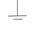

Estimation of Fourier Coefficients of a Periodic Signal
Main Circuit

ch1
ch2
1
2
3
4
5
6
7
8
9
10
INSTRUCTIONS
Connect the circuit elements as mentioned below 1-3 ,3-4 ,5-6, 8-7, 7-9, 10-2(ex:-Drag from 1 and click on 3.)
3 volt p-p sinusoidal voltage is applied at the input.Put R=100KΩ ,L=10mH, C=100nF.
Switch on the oscilloscope by clicking "ON" button & click twice the Sine wave button for input signal & click on the"Output" button to observe the output.Channel & Channel2 button shows the input & output signals respectively. Dual, shows both of them.
Change the Frequency of input signal by the Frequency knob from 100Hz to 100KHz & observe the corresponding output voltage signal.
Switch off the oscilloscope
Click on Tableshow button each time after clicking on "output" button to see observation eachtime.
Click on Plot button to see the frequency response plot(Gain(dB)vs.Frequency(Hz)).Click on Clear button to clear datas.
Switch off the oscilloscope.Then again switch on.
click on square wave button & keep the frequency around 15KHz.click square output to see first harmonic component & click on Tableshow to have the coefficient value
Repeat the above step for square wave input of frequencies around 5KHz & 3.5KHz to have values of 3rd & 5th harmonic co-efficients respectively.
Switch off the oscilloscope.
For above three steps keep L & C values 10 mH-10nF, 1mh-100nF, 0.1mH-1000nF
R
L
C
KΩ
mH
nF
OSCILLOSCOPE
Output(vo)v
Frequency(Hz)
voltage(Volt)
Volt(V)/div
Volt(V)/div
Position-Y
Channel 1
Position-Y
Channel 2
Position-X
Time(ms)/div
Sl. No.
Frequency(Hz)
Input Voltage
Output Voltage(V
o
)
V
o
/V
i
Gain(dB)
Sl. No.
L(mH)
C(nF)
Frequency(Hz)
Input Voltage
Output Voltage(V
o
)
V
o
/V
i
Harmonic(a1)